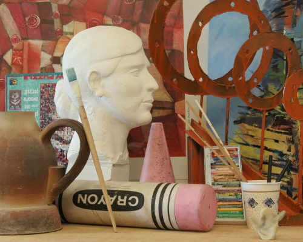
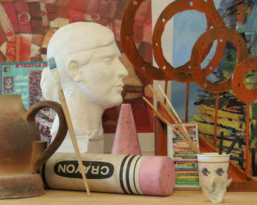

Stereovision using more than two image sets
This projects aims to extract depth information from more than two image sets, thereby, improving accuracy of depth map. To do so, depth map set, obtained from all valid pair of images, is averaged out to reduce number of unresolved pixels in final depth map. For comparison, ground truth for depth map was also obtained using depth sensor.
Input

Left image

Center image

Right image
Ground truth

Ground truth for depth map
Results

Depth map obtained from left and center image

Depth map obtained from center and right image

Average depth map